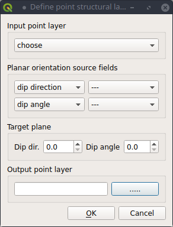

This tool allows to calculate the angles (as degrees) between a reference plane and the (eventually selected) features in a point layer (Fig. 1).
It can be applied to determine the degree of misalignement between a reference (for instance, regional) measure and local geological measures.
The user has to define the two fields storing the azimuth (dip direction or RHR strike) and the dip angle of each feature,
the attitude of the reference plane, and the name of the output shapefile with a new field storing the calculated angle (Fig. 2).

Fig. 2. Definition of parameters for angle calculation.